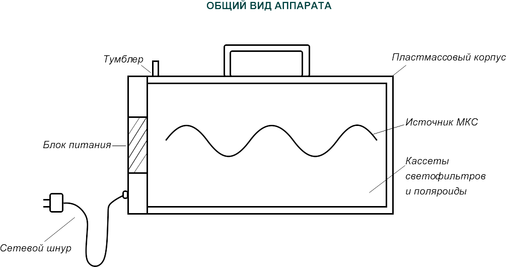

Аппарат для Биоэнергетической реабилитации здоровья
БИОРЕЗОНАНС-2 (Б-2)
ВВЕДЕНИЕ
Настоящий паспорт предназначен для ознакомления с аппаратом для биоэнергетической реабилитации здоровья типа Б-2 и устанавливает правила эксплуатации, соблюдения которых обеспечивает его работоспособность, а также даются краткие методические указания по использованию аппарата для оздоровления и биоэнергетической реабилитации.
НАЗНАЧЕНИЕ ИЗДЕЛИЯ
Аппарат для биоэнергетической реабилитации здоровья Биорезонанс-2 (Б-2) снимает вредные последствия ядерных испытаний и аварий атомных станции на человека (снижает канцерогенность химических и физических факторов и уровень мутации), повышает иммунитет. Аппарат является отличным средством для устранения последствий стрессов, снижает артериальное давление, повышает половую потенцию, предупреждает и излечивает радикулиты и многие другие неврологические, воспалительные процессы, способствует полноценному росту и развитию детей.
В домашних условиях может использоваться в соответствии с методическими рекомендациями, доступными для понимания каждого грамотного человека. Аппарат устраняет «порчу», «сглаз»-дефектные и чужеродные структуры в биоплазме человека.
Эксплуатация аппарата должна производится в закрытом отапливаемом помещении при температуре окружающей среды от +10 до +40 градусов (Цельсия) и относительной влажности воздуха до 85% при температуре +20 градусов (Цельсия).
Питание аппарата осуществляется от сети питания напряжением 220 В с доступным отклонением +10% с частотой 50+-1 Гц.
ТЕХНИЧЕСКИЕ ХАРАКТЕРИСТИКИ
Общий вид устройства приведен на рис. 1
Технические данные:
- Область спектра излучения 620-690 нм.
- Тип поляризации — линейный (матричный).
- Область спектра максимального излучения 640 нм.
- Потребляемая мощность, не более 30 Вт.
- Габаритные размеры аппарата 340х190х65 мм.
- Масса аппарата 0,6 кг.
Рисунок №1
УСТРОЙСТВО И ПРИНЦИПЫ РАБОТЫ
Аппарат Б-2 состоит из оптического блока, источника красных поляризованных лучей, блока питания, вмонтированных в единый пластмассовый корпус.
Оптический блок представляет собой корпус, выполненный из пластмассы, внутри которого вмонтирован источник холодного красного света. Корпус закрывается крышкой с кассетой специальных светофильтров и поляроидов, которые после сборки крышки и корпуса прикрепляются болтами на клее. Таким образом, блок представляет собой не разборную конструкцию.
Блок питания подключается к сети переменного тока посредством кабеля с электрической вилкой. Электролюминесцентный источник присоединяется к сети через тумблер.
Принцип работы аппарата Б-2 заключается в получении особого типа поляризованного света в красной области (ноу-хау) для активации биоплазмы активных зон (системы Су-Джок) и периферической крови человека, области скопления биологически активных точек (подошвы и т. п.) с целью антиболевого, противовоспалительного эффекта, а также повышения иммунитета и скорости регенирации, улучшения психофизического статуса, снимает вредные эффекты ионизирующей радиации и других факторов ядерных реакций, нормализует психоэнергетическое состояние человека.
УКАЗАНИЕ МЕР БЕЗОПАСНОСТИ
При эксплуатации аппарата необходимо соблюдать общие требования правил техники безопасности при работе с электроустановками.
Запрещается:
- включать и работать с аппаратом, у которого имеются повреждения корпуса.
- оставлять включенный аппарат без присмотра.
- разбирать оптический блок питания.
ПОРЯДОК РАБОТЫ
1. Включите в питающую сеть 220 В, 50 Гц сетевую вилку аппарата.
2. Включите тумблер на крышки блока питания.
3. Во время работы аппарата необходимо иметь ввиду, что нагрев кассеты светофильтров отрицательно сказывается на оптических элементах аппарата, поэтому через каждые 15 минут непрерывной работы аппарата его следует отключать на 10-15 минут до полного охлаждения.
4. Выключение аппарата производится тумблером, после чего необходимо выключить вилку из питающей сети.
ХАРАКТЕРНЫЕ НЕИСПРАВНОСТИ И МЕТОДЫ ИХ УСТРАНЕНИЯ
1. Световой блок питания аппарата Б-2 ремонту не подлежит.
2. Необходимо оберегать аппарат от резких ударов и падений.